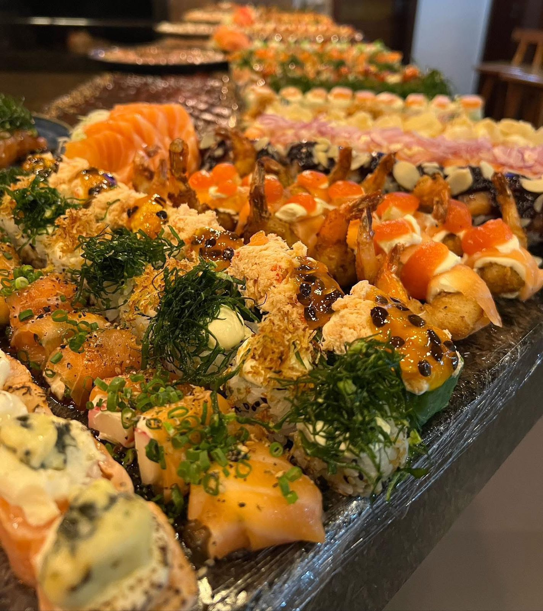

Local selecionado

Emporio e Restaurante
Chef Adriano
Empório e Restaurante com várias variedades e ótima qualidade!
Rua Deolindo Panichi, 790 - Centro, Ribeirão Claro - PR, 86410-000
Aberto de terça-feira à sábado, das 13:00 às 22:00.
Telefone: (43) 99195-9252